Jeroen Van Goey
Just Another Genome Hacker
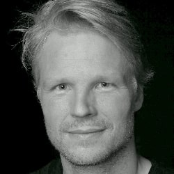
Machine learning research engineer, fascinated by the intersection of AI and science. I build large-scale models for biology: Transformer and Diffusion models for de novo peptide sequencing and personalized cancer vaccines, trained at scale in PyTorch.
Publications
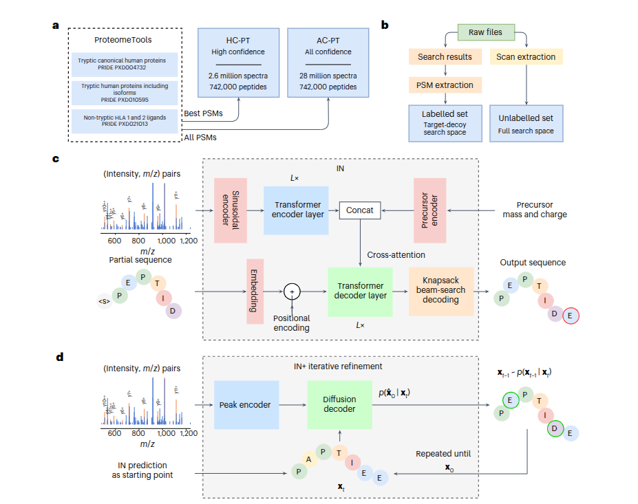
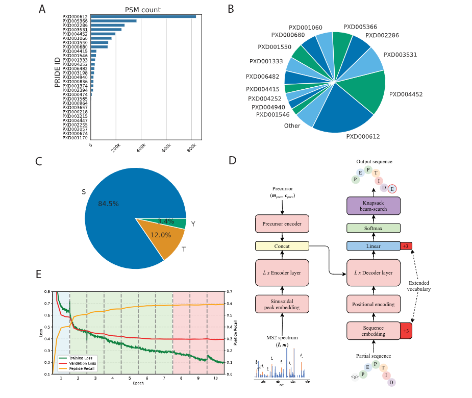
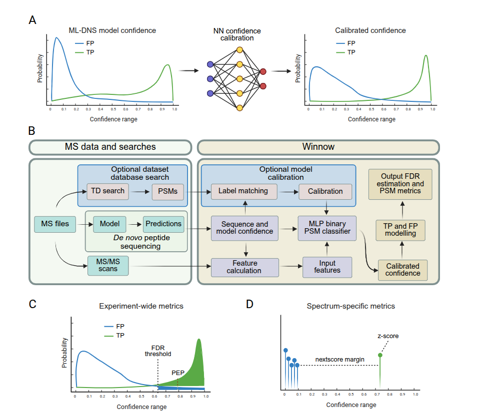
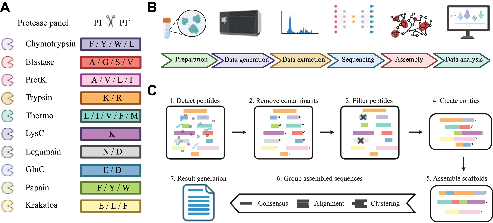
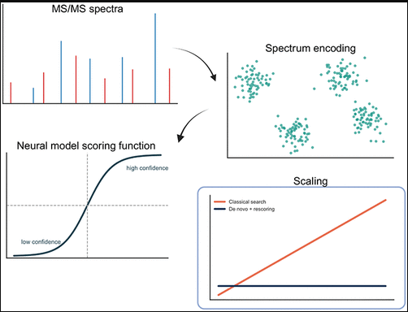
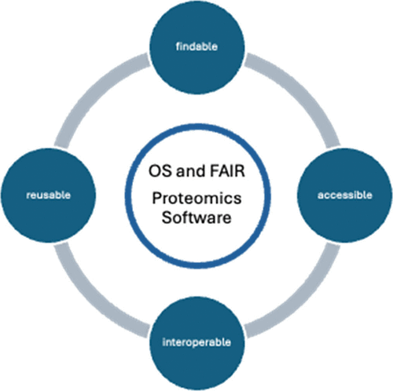
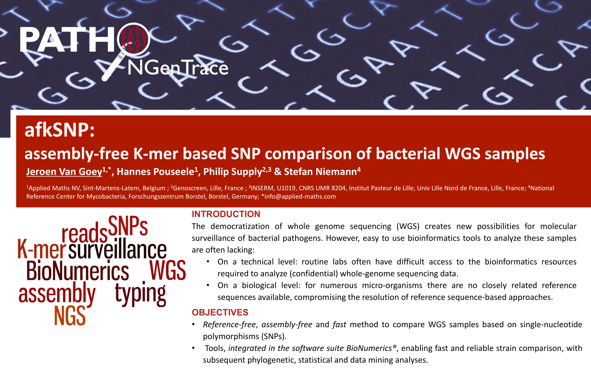
InstaNovo in the news
The InstaNovo paper drew broad attention across the scientific press.
- ScienceAn AI revolution comes to protein sequencing
- Science NewsAI may help decode proteins DNA can't reveal
- Chemistry WorldAI takes step towards cracking biology's toughest problem
- BioTechniquesDoubling up: novel AI models improve de novo peptide sequencing
- Technology NetworksAI models accelerate discovery within protein science
- AZoLifeSciencesNovel AI models enhance disease diagnosis and pathogen ID
- ScienceDailyPossible game-changers within protein science and healthcare
- Mirage NewsAI models revolutionize protein science
- The Research CodeAI system reads protein sequences without databases
- Dong-a ScienceAI cracks protein sequencing (Korean)
More coverage: press releases, blogs & social
Institutional press releases: InstaDeep · DTU · Science News Denmark (Novo Nordisk Foundation)
Blogs & newsletters: Plenty of Room · Proteomics News
Community: r/proteomics · r/massspectrometry
On X: InstaDeep · viral thread (149.8K views) · Chemistry World · A. Laustsen · T. P. Jenkins · J. Bravo-Abad
On LinkedIn: InstaNovo · Proteomics & Immunopeptidomics · M. Busch · A. Laustsen
After publication we released a next generation of InstaNovo models: Introducing the next generation of InstaNovo models (announcement on X · on LinkedIn).
Projects
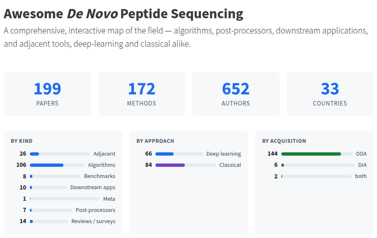
A comprehensive, interactive map of the field: algorithms, post-processors, downstream applications, and adjacent tools, deep-learning and classical alike.
Experience
InstaDeep
Staff Research Engineer in BioAI
July 2024 – Present · Cape Town, South Africa
Team lead and hiring manager for two cross-disciplinary BioAI research teams: de novo peptide sequencing (in collaboration with the Technical University of Denmark) and signal-peptide design for secretion efficiency in immunotherapy and vaccines (with BioNTech). Responsible for recruitment and team expansion across the Cape Town and Kigali offices.
Senior BioAI Software Engineer
August 2022 – July 2024
Designed, implemented and delivered performant, scalable protein-design libraries (Transformer-based, written in Python / PyTorch) running compute-intensive workloads on large, complex data across GPUs, HPC supercomputers and the cloud.
Barco
Sr. Software Development Engineer, Machine Learning
February 2020 – August 2022 · Kortrijk, Belgium
Built a TensorFlow Extended production pipeline training deep-learning models on multispectral images to detect and classify melanoma skin cancers, working across the research, cloud-backend and mobile/web frontend teams.
BASF
Bioinformatics Researcher, Manager of the Python & R Platforms
August 2018 – January 2020 · Zwijnaarde, Belgium
Owned the Python/R data-analysis platform used by 480 researchers and data scientists: technical support, proactive monitoring and root-cause analysis, training (NumPy, pandas, BioPython, …) and mentoring across the scientific community.
Bayer Crop Science
Bioinformatics Researcher & Python Platform Manager
February 2018 – July 2018 · Zwijnaarde, Belgium
Same platform role, prior to acquisition by BASF Agricultural Solutions.
Applied Maths, a bioMérieux company
Bioinformatics Software Developer
September 2011 – January 2018 · Sint-Martens-Latem, Belgium
Worked on BioNumerics, a bioinformatics suite for integrated analysis of biological data, writing custom Python scripts and extensions for clients in the clinical, academic and government sectors.
Education
Katholieke Universiteit Leuven: Bioinformatics, partial credits obtained (M.Sc. not completed) · 2010–2012
University of Antwerp: M.Sc., Biology · 1997–2004
Hogeschool West-Vlaanderen (Howest): Microdegree, Machine Learning & Deep Learning · 2018–2019
Hackathons
I have co-created, organized and judged machine-learning hackathons at the Deep Learning Indaba and its regional IndabaX events.
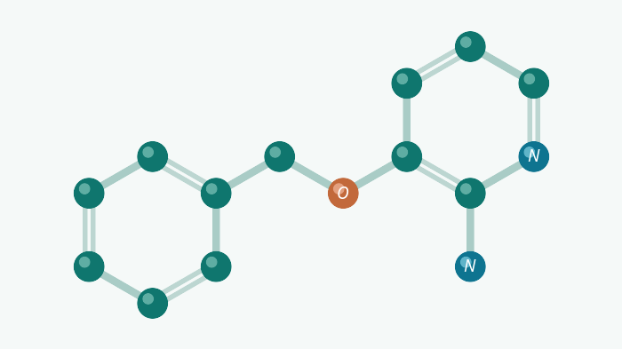
Training a Machine Learning Interatomic Potential (MLIP) model (predicting the energy and forces of atomic systems) with the mlip library, using the 3BPA molecule (3-(benzyloxy)pyridin-2-amine) as the benchmark system.
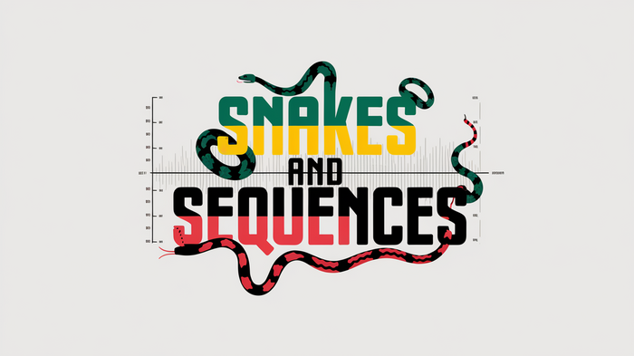
Using InstaNovo and de novo peptide sequencing to characterise African snake venoms for better antivenoms.
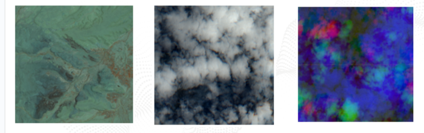
Predicting desert locust breeding grounds from remote-sensing data, with teams competing on the Zindi leaderboard.
Skills
Machine learning · Transformers, diffusion models, large language models (LLMs), supervised & self-supervised learning
Frameworks · PyTorch, TensorFlow / TFX, NumPy, pandas
Scale & MLOps · Distributed GPU training, HPC clusters (on-premise and the MareNostrum 5 supercomputer), cloud (AWS), Docker, CI/CD
Bioinformatics · BioPython, BLAST, ClustalW, Snakemake, BioNumerics
Languages · Python (primary), R
Just for fun
My solutions to Project Euler, a series of challenging mathematical and computer-programming problems.
| Year | Days | Stars |
|---|---|---|
| 2024 | ||
| 2023 | ||
| 2022 | ||
| 2021 | ||
| 2020 | ||
| 2019 | ||
| 2018 | ||
| 2017 | ||
| 2016 | ||
| 2015 |
My solutions to Advent of Code, the annual December programming-puzzle event (156 stars across 2015–2024).